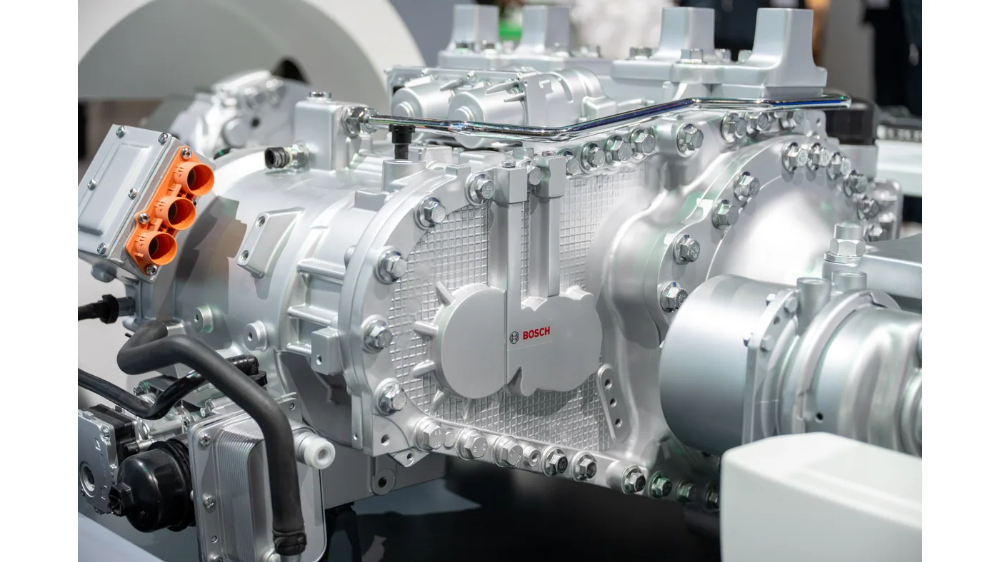

Bosch anunció el 14 de septiembre de 2026 que busca duplicar su facturación en tecnologías para vehículos comerciales pesados hacia mediados de la década de 2030. La empresa parte de un negocio de más de 4.000 millones de euros y combina su proyección con electrificación, asistencia a la conducción y servicios digitales.
En la misma comunicación confirmó un nuevo pedido de Daimler Truck para componentes de propulsión del eActros, fabricados en Europa. Bosch también afirma que sus motores eléctricos e inversores participan en uno de cada tres camiones eléctricos nuevos registrados en ese mercado durante 2026. Es una participación declarada por la compañía, no un dato sobre el parque argentino.
Un objetivo de crecimiento, no un resultado cerrado
La meta comercial se apoya en las previsiones de Bosch sobre producción mundial y adopción tecnológica. Debe leerse como una expectativa empresarial. El anuncio no equivale a ventas ya realizadas, a una garantía de expansión del transporte local ni a un calendario de renovación obligatorio para las flotas.
Análisis de Zabala Repuestos. La noticia resulta interesante porque muestra dónde un proveedor importante espera encontrar actividad futura. Sin embargo, su estrategia y la decisión de compra de un transportista son asuntos distintos. Una empresa puede crecer mientras un cliente particular necesita conservar su vehículo actual o renovar solamente una parte de la flota.
Qué hay detrás de la propuesta tecnológica
Como antecedente, el dossier técnico de Bosch del 2 de septiembre describe un eje eléctrico rígido que integra motor y transmisión para aplicaciones de 18 a 49 toneladas. Ese material es anterior a la noticia de esta semana y sirve para entender los productos que acompañan la estrategia.
El mismo documento presenta una cámara multifunción MPC4 con mayor capacidad de procesamiento y un radar de séptima generación, ambos previstos para producción en 2027. También describe funciones de supervisión de atención del conductor integradas en el sistema de retrovisores digitales. Los distintos componentes no comparten necesariamente el mismo momento de llegada al mercado.

El camión conectado se evalúa como un conjunto
Una cámara, un radar o una computadora no funcionan comercialmente aislados de su integración en el vehículo. Para el usuario importa qué sistema trae el camión elegido, cuáles son sus funciones habilitadas y qué soporte recibe. El nombre del proveedor es una referencia, pero no reemplaza esa información.
La pregunta para el concesionario debería ser concreta: qué equipa esta unidad y qué necesita para conservar sus funciones después de una reparación. No corresponde asumir que dos vehículos comparten procedimientos porque utilizan componentes de una misma empresa.
Una nueva conversación entre flota y taller
El seguimiento de versiones y equipamiento puede incorporarse al historial del vehículo. Registrar qué se reparó, qué quedó pendiente y qué documentación se consultó facilita el intercambio entre responsables. Esa organización es útil incluso antes de sumar nuevas tecnologías.
También conviene definir a quién se consulta cuando una incidencia involucra varios sistemas. Una responsabilidad clara ayuda a evitar diagnósticos basados solamente en el síntoma visible. Las intervenciones sobre equipos de asistencia deben seguir los procedimientos del fabricante y quedar en manos de personal capacitado.
Cómo interpretar la noticia desde Argentina
Los anuncios examinados tienen alcance internacional y un fuerte foco europeo. No confirman que todos los productos se ofrezcan en Argentina ni permiten trasladar automáticamente exigencias de otros mercados. La disponibilidad y la configuración local deben verificarse con cada fabricante.
- Separar objetivos de negocio, productos actuales y desarrollos futuros.
- Pedir la lista de equipamiento de la unidad ofrecida.
- Consultar documentación, capacitación y atención disponibles.
- Evaluar el costo total de la propuesta, no solamente un componente.
La estrategia de Bosch es una señal de la importancia creciente de proveedores de electrónica y software en el transporte. Para una flota, su utilidad no está en anticipar una compra por una proyección empresarial, sino en prepararse para comparar ofertas con mejores preguntas y con información verificable.